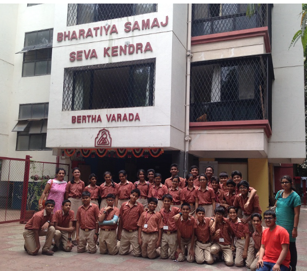
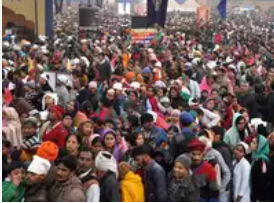

Shreevatsa - SOFOSH Adoption Centre

Location
Shreevatsa is located within the Sassoon General Hospitals complex in Pune. The address is below Ward No. 31/32, Sassoon General Hospitals, P.O. Box 94, G.P.O., Pune-411001, Maharashtra.
Contact Information
Phone: +91-020-26124660, +91-020-26128219
Email: sofosh@vsnl.net, admin@sofosh.org
Services Provided
Adoption Services
Counseling
BSSK - Bhartiya Samaj Seva Kendra
Location
BSSK is located at "Bertha Varada," Plot No. 373, 6th Lane, North Main Road, Koregaon Park, Pune-411001, Maharashtra.
Contact Information
Phone:+91-020-26128002, +91-020-26055332, +91-020-6125716
Email: bssk@bsskindia.org
Services Provided
Adoption ServicesChild Care and Rehabilitation
Counseling
Renuka Mahajan Trust

Location
Plot No. 39, S.No. 67, Vidya Nagar, Pune 411032
Lane No. 2, Sai Nagar, Near Sai Baba Mandir, Wadmukha Wadi, Alandi Road, Pune 412105
Contact Information
Phone:020-32662982, 020-32528187 Mobile: 9850810001
Email: rsg1994@gmail.com
Services Provided
Child Adoption,Health and Family Welfare
Education and Literacy
Priya-Darshani Shishu Griha

Location
Priya-Darshani Shishu Griha is situated at 691/1B, Old Bhavsar Hospital, Adinath Nagar, near Century Enka Colony Gate No. 2, Bhosari, Pune-411039, Maharashtra.
Contact Information
Phone:020-+91-020-27123391, +91-020-27122630
Email: priyadarshanishisu@vsnl.com
Services Provided
Child care
Adoption services
Balwant Kartar Anand Foundation
Location
Anand Corner, 18, Dr. Coyaji Road, Pune - 411001, Maharashtra, India
Contact Information
Phone:+91-020-26361027, +91-020-26360081, +91-020-26330602
Email: preetmandir2@vsnl.net, preetindianadoption@vsnl.net
Services Provided
Child care
Adoption resources authority